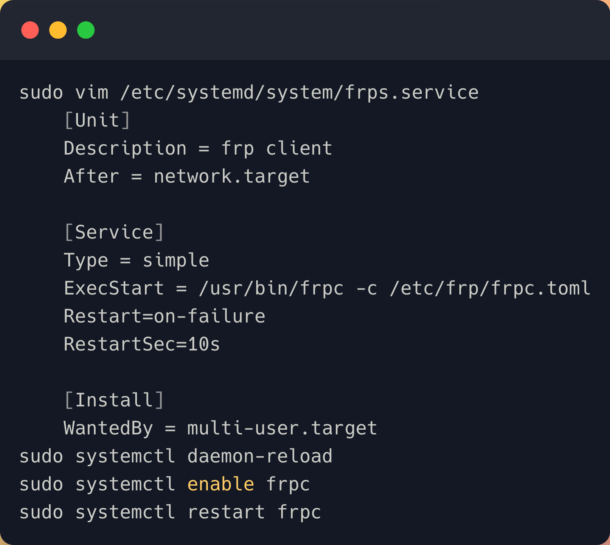

本文中的外网机子A和内网机子B均为Ubuntu系统.
以内网机子B为例
我们知道机子A的域名是sh.cirray.cn, 这样我们就能通过 ssh B_account@sh.cirray.cn -p 7022来访问内网机子B。这里我们还配置了mysql服务的穿透,只要B上mysql配置了0.0.0.0的访问,就能通过 mysql -h sh.cirray.cn -P 7306 -p 来访问内网机子B上的mysql.
此外后端开发人员会遇到，本地开发的服务想随时让前端外网访问，同样增加一个 type为tcp的proxies配置即可。